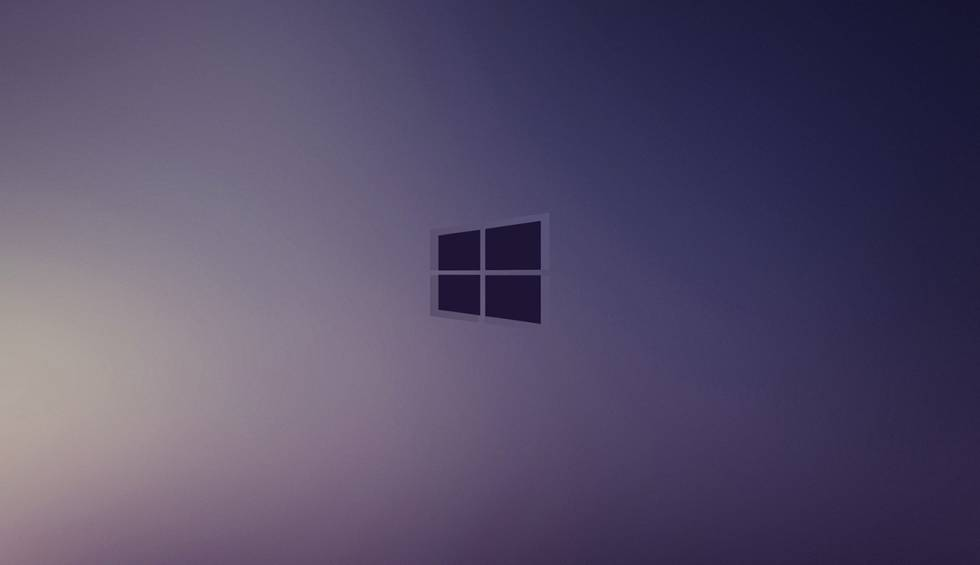

hola. ¿quieres ver la pagina pagina 02?
Ir a la pagina 03>
Ir directamente a la parte que trata sobre
La cocina
Rodillos
Tiro con aro
En 1967, la joven estudiante irlandesa Jocelyn Bell detectó una extraña señal en los registros del radiotelescopio con el que trabajaba. La señal, una serie de pulsos cortos que se repetían cada 1,3 segundos, aparecía cada día a la misma hora según el tiempo de las estrellas y no el civil, lo que indicaba que venía del espacio exterior. Sin embargo, el intervalo de 1,3 segundos entre pulsos era muchísimo más corto y regular que el de otras fuentes pulsantes conocidas. Nunca se había detectado nada similar que viniera del cielo, y claro, ella misma lo reconoce, la idea cruzó su mente: ¿había detectado señales de una civilización alienígena? Aunque ni ella ni su mentor mencionaron esta idea en público, la prensa se llenó de hombres verdes tratando de comunicarse con nosotros.
Esta es una foto de Windows:
